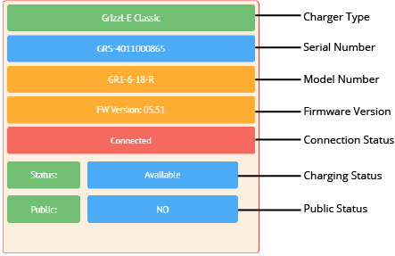
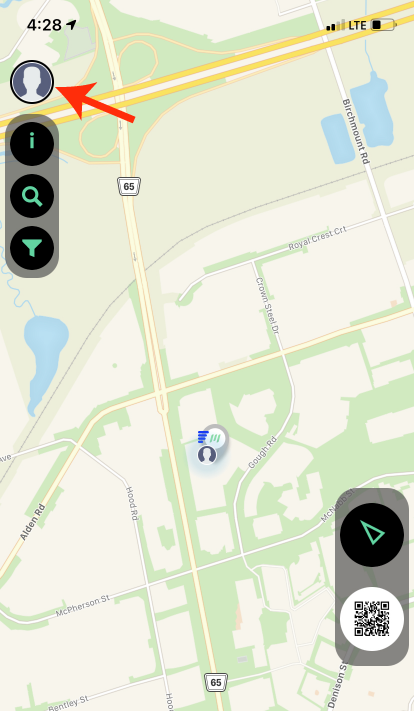
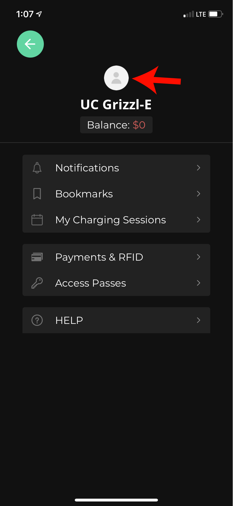

Enter the Charger Serial Number into the Serial Number Field.
Note: Other information on the unit can be filled out but is not necessary. Only the Serial Number is needed.
Select the Create button.
Grizzl-E Smart only connects to a 2.4ghz Wi-FI frequency. Ensure your network has a dedicated 2.4ghz WI-Fi band with its own SSID. Before connecting Grizzl-E Smart, check the network frequency in network properties on your
PC or Android.
For Dual Band 2.4ghz/5ghz Routers, do one of the following:
Create a separate SSID for the 2.4ghz and 5ghz networks - for example, network_name and network_name-5G.
On Routers that have the ability, turn off 5G band and connect to 2.4ghz band.
Install a 2.4ghz Wi-Fi extender with a separate extension network for the charger.
Grizzl-E Smart will charge with or without a Wi-Fi connection, Without a Wi-Fi connection OCPP Smart Features will not be available.
Before connecting to the network, check the strength and Encryption type of the Wi-Fi signal:
Plug in the charger. Ensure indicator light is alternating blue and purple
Open the Wi-Fi settings on your phone or desktop
Select the network UC_Smart_[ChargerSerial#].
Open the internet browser on your device.
Open the internet browser on your device.
A webpage will load. Select the Show Available Networks button.
A list of available networks will display with RSII Strength and Encryption Type.
Signal Strength
RSII in dBm
Signal Strength
50
Excellent
60
Very Good
70
Good
80
Low
90
Very Low
0
No Signal
The RSSI must be between 50-79 to update the charger and use smart features. If the RSSI reading is above 80 install a Wi-Fi repeater to increase the signal strength or move the Wi-Fi router closer to the charger.
To connect your Grizzl-E Smart to Wi-Fi:
Ensure charger is plugged in and indicator light is Alternating Blue/Purple.
Open the Wi-Fi settings on your computer or cell phone.
Select the network UC_Smart_[ChargerSerial#]*.
Open your browser.
Enter the IP address 192.168.4.1 into the browser search bar.
A webpage will load. Select the Enter Router Credentials button.
Enter the SSID** and Password for your Wi-Fi network. Leave acharger.ca in the Portal URL.
Select the Enter Credentials button.
Verify that you are connected. If connection is successful the indicator light will alternate between Blue and Light Blue.
Disconnect your smartphone from UC_Smart_#### and re-connect to your local network.
Close the browser page.
*Note: Your device may state that the Wi-Fi network is not connected to the internet. Continue without Internet until the end of the procedure.
**SSID is the network name.

After Connecting the device to the Wi-Fi network and adding the device ensure the device is connected to acharger.ca.
The connection status will show red with Connected. The indicator light on the charger will be alternating Blue/Turquoise
If the device shows as Not Connected to the acharger.ca portal try the following steps:
Ensure the Indicator light on the device is alternating between Blue and Turquoise.
Wait 2 minutes for the charger and portal to establish a connection.
Refresh the acharger.ca page and log back in.
Power Cycle the Charger by unplugging it and plugging it back in.
Ensure the serial number on acharger.ca matches the one on the label.
Reset the Wi-Fi Board as described in the User Manual
Connect to AmpUp OCPP Portal
Grizzl-E Smart only connects to a 2.4ghz Wi-FI frequency. Ensure your network has a dedicated 2.4ghz WI-Fi band with its own SSID. Before connecting Grizzl-E Smart, check the network frequency in network properties on your
PC or Android.
For Dual Band 2.4ghz/5ghz Routers, do one of the following:
Create a separate SSID for the 2.4ghz and 5ghz networks — for example, network_name and network_name-5G.
On Routers that have the ability, turn off 5G band and connect to 2.4ghz band.
Install a 2.4ghz Wi-Fi extender with a separate extension network for the charger.
Grizzl-E Smart will charge with or without a Wi-Fi connection, Without a Wi-Fi connection OCPP Smart Features will not be available.
Before connecting to the network, check the strength and Encryption type of the Wi-Fi signal:
Plug in the charger. Ensure indicator light is alternating blue and purple
Open the Wi-Fi settings on your phone or desktop
Select the network UC_Smart_[ChargerSerial#].
Open the internet browser on your device.
Open the internet browser on your device.
A webpage will load. Select the Show Available Networks button.
A list of available networks will display with RSII Strength and Encryption Type.
Signal Strength
RSII in dBm
Signal Strength
50
Excellent
60
Very Good
70
Good
80
Low
90
Very Low
0
No Signal
The RSSI must be between 50-79 to update the charger and use smart features. If the RSSI reading is above 80 install a Wi-Fi repeater to increase the signal strength or move the Wi-Fi router closer to the charger.
To connect your Grizzl-E Smart to Wi-Fi:
Ensure charger is plugged in and indicator light is Alternating Blue/Purple.
Open the Wi-Fi settings on your computer or cell phone.
Select the network UC_Smart_[ChargerSerial#]*.
Open your browser.
Enter the IP address 192.168.4.1 into the browser search bar.
A webpage will load. Select the Enter Router Credentials button.
Enter the SSID** and Password for your Wi-Fi network.
In the Portal URL field enter the following URL: centralsystem.ampup.io/ocpp/united-chargers/[ChargerSerial#]. Use the Charger Serial Number found on the white label.
Select the Enter Credentials button.
Verify that you are connected. If connection is successful the indicator light will alternate between Blue and Light Blue.
Disconnect your smartphone from UC_Smart_#### and re-connect to your local network.
Close the browser page.
*Note: Your device may state that the Wi-Fi network is not connected to the internet. Continue without Internet until the end of the procedure.
**SSID is the network name.
To set up your Grizzl-E Smart Charger on AmpUp:
Download the AmpUp App from the Apple Store or Google Play.
Create an Account on the AmpUp app.
From the home screen/log in screen, tap the profile icon in the top left.

Select the User Settings Icon above your name.

Select the My Home Charger field.
Select the Add Charger button.
Select Grizzl-E from the Charger Brand drop down list.
Enter the Charger Serial Number in the Charger ID: field.
Fill any other optional information about the charger.